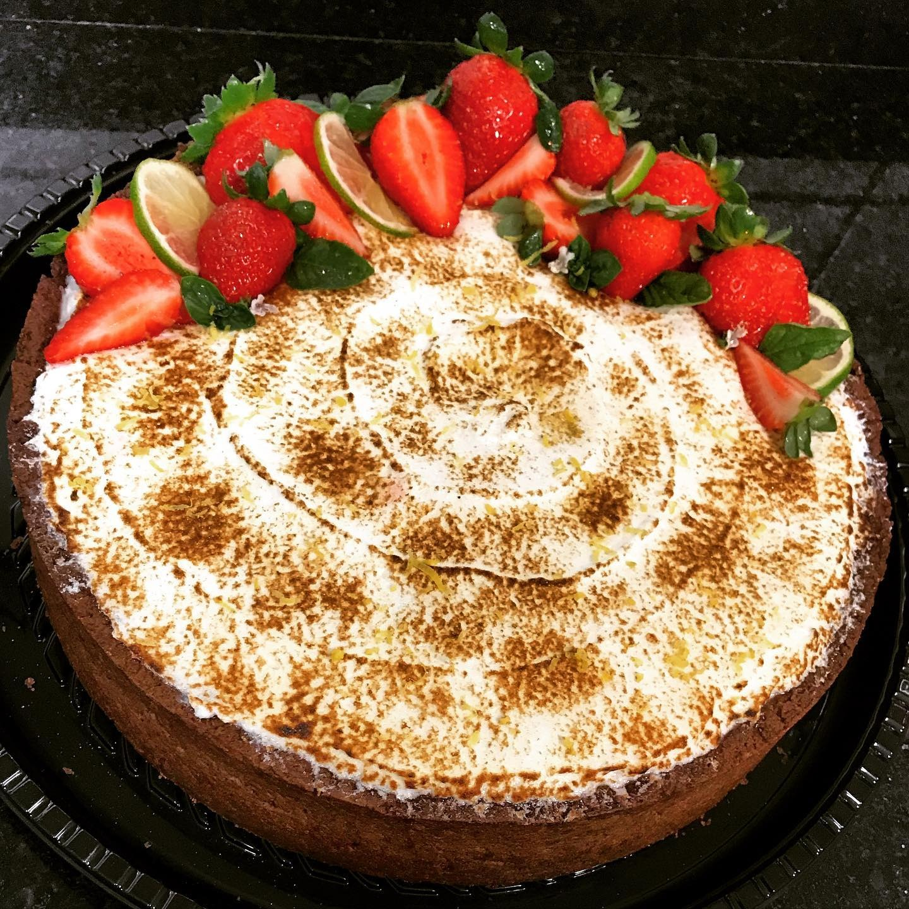

Massa
Pâte sablée amanteigada, com baunilha e descanso antes de abrir.
receita artesanal
Uma tortita macia e delicada, com massa sablée de baunilha, creme ligeiro, morangos frescos e merengue italiano tostado com calma.

Pâte sablée amanteigada, com baunilha e descanso antes de abrir.
Creme de confeiteiro combinado com chantilly de nata para ficar leve e macio.
Morangos frescos, merengue tostado e acabamento livre para brincar com a decoração.
base da torta
recheio
cobertura
montagem